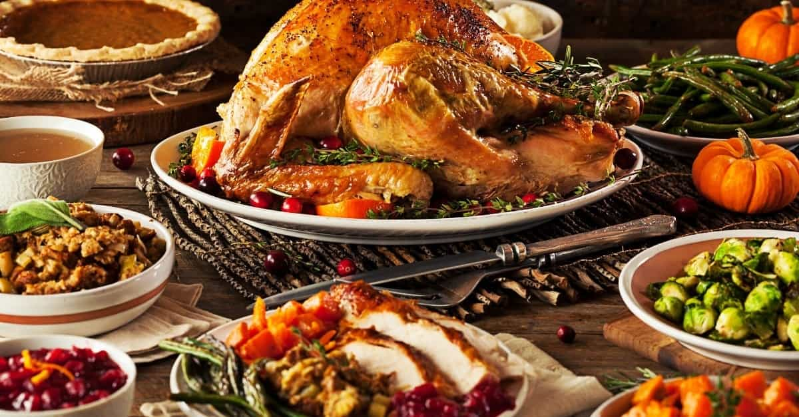

Ron Briggs enjoys the process of developing his character, mind and body.


Watching football on Sundays used to be something that I really enjoyed growing up but like most things in life that has changed. The NFL today offers me very little with the exception of it making for a great precursor to a nap. With commercials every five minutes, now paired with an inordinate amount of replay reviews, the game has had no flow for many years.
The average NFL game only has about 11 minutes of live game footage. If you were to actually sit awake through an entire NFL broadcast (hard to imagine but try your best) you would spend approximately:
Less than 6% of your time spent sitting through a full NFL broadcast will involve the viewing of actual, live football. The vast majority of your time will be spent watching non-football related material like commercials and people standing around.
Penalties and rules are another issue ruining the league over the past decade. The NFL has made it extremely difficult for defensive players to actually do their jobs. Defenders now regularly get penalized and sometimes even fined for hard, clean hits on quarterbacks, wide receivers, and running backs. This can be frustrating to watch especially if you’re old enough to remember the NFL before it implemented these new regulations.
Every week you’ll see a roughing the passer call for merely patting the quarterback on the helmet, an unnecessary roughness penalty on a clean hit that makes you shake your head or a defenseless receiver penalty that was clearly unavoidable. I’m all for player safety but when you sign up to play football you know the risks involved.
Another annoyance plaguing the league is the fact that players now celebrate nearly every play that they make. It’s now an anomaly when a play is made with no celebration afterwards. Our culture celebrates silliness and professional football is no different. Everyone is starving for attention so whether it’s an offensive or defensive player, it makes no difference, even routine plays are now celebrated with foolish enthusiasm.
For a good example of how the game was played in the past watch the video below. In this clip you will see consecutive goal line stops made by a defense playing in a big game. There will be minimal or no celebrating until the final 4th down stop. This type of business-like attitude is rarely seen in the league today.
The NFL has been degrading for more than a decade and there looks to be no reversing this decline. Now with politics cementing it’s way into the league, football on Sundays is something that I can do without. The following is a list of simple ideas for things to do on Sundays besides sitting in front of a television and watching football:

Free up some time in your upcoming work week and save yourself money in the process by cooking and prepping your weekly meals on Sunday. Not only is this a nice way to save time and money but it can be a great way to insure that you eat healthier throughout the week.
Instead of watching men exercise on TV, go and do some exercise yourself. Weekends are a great time to get some training in especially if you’re excessively busy during the course of the week. Gyms also tend to be relatively empty on Sunday afternoons, which is a bonus.

The fall is a beautiful time of the year to spend outside. Hiking, biking, going for a run or even walking are all great fall activities. Get out of the house, enjoy the scenery and get some exercise outdoors.
Spend your free time learning to do something new. Practicing a new skill can be extremely rewarding, whether it’s a foreign language, a martial art, carpentry, or cooking. Get started on a project that you’ve been putting off. Most of us have some idea we’ve been procrastinating on, get it started on your next Sunday.

Stimulate your mind instead of vegging out in front of the television. Catch up on interesting articles you may have missed throughout the week. Open up a book and learn something new.

For some reason I notice an above average number of cute girls out on fall Sundays. It may just be the ratios being skewed by the many men being at home watching football. Go do some shopping at your local grocery store and work your day game.
With most people off from work, Sundays are a great day to hang out with an old friend. I try to schedule Sunday meet ups a few times a month. Catching up, enjoying good conversation, and exchanging ideas is infinitely better than sitting in front of a TV.
I find myself doing productive work on weekday nights and I would rather not spend a Friday or Saturday evening out on a date. That leaves Sunday as a great time for scheduling dates, especially first dates.

Do something you enjoy. Drink some tea, smoke a cigar, enjoy a nice meal or take a nap. These activities are not only relaxing but they make for great physical and mental restoration in preparation for your upcoming week. Take it easy and slow life down a little. Review things or plan your upcoming week. Take a look at your goals and your process for achieving those goals to make sure that they’re still in alignment.

Get your parents, wife, or kids together for a nice family meal. Enjoy the conversation and ask them how their week went.
The NFL has been degrading for over a decade with all the wasted time on commercials, an excessive amount of questionable rules, immature players and unrestrained political involvement. It is certainly not an activity purposeful men should spend any considerable amount of time on. Do yourself a favor and go do something more productive with your Sundays.
Read More: NFL Suffers Ratings Drop After Pandering To The SJW Narrative